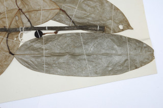
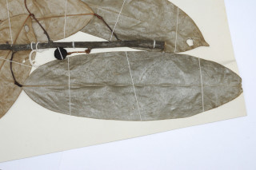

Trees, up to 18 m tall.
18ಮೀ ಎತ್ತರದವರೆವಿಗೆ ಬೆಳೆಯುವ ವೃಕ್ಷಗಳು.
18 മീറ്റര് വരെ ഉയരത്തില് വളരുന്ന മരങ്ങള്.
மரம், 18 மீ. உயரம் வரை வளரக்கூடியது.
Leaves simple, alternate, distichous; petioles 0.8-0.9 cm long; lamina 25-35 x 7-8 cm, oblong, apex short acuminate, base rounded, glabrous; secondary_nerves 10-13 pairs, slender; tertiary_nerves reticulate.
ಎಲೆಗಳು ಸರಳ, ಪರ್ಯಾಯ ವ್ಯವಸ್ಥೆಯಲ್ಲಿದ್ದು ಕಾಂಡದ ಎರಡೂ ಕಡೆ ಎದುರು ಬದರಿನ ಲಂಬ ಸಾಲಿನಲ್ಲಿರುತ್ತವೆ. ಎಲೆತೊಟ್ಟು 0.8 ರಿಂದ 0.9 ಸೆಂ.ಮೀ. ಉದ್ದವಿರುತ್ತವೆ. ಎಲೆಪತ್ರ 25-35 × 7-8ಸೆಂ.ಮೀ. ಧೀರ್ಘ ಚತುರಸ್ರಾಕಾರದಲ್ಲಿದ್ದು ಸಣ್ಣದಾದ ಕ್ರಮೇಣ ಚೂಪಾಗುವ ಎರಡನೇ ದರ್ಜೆಯ ನಾಳಗಳು 10 ರಿಂದ 13 ಜೋಡಿಗಳಿದ್ದು ತೆಳ
ലഘുവായ ഇലകള്, ഏകാന്തരക്രമത്തില്, തണ്ടിന്റെ ഇരുഭാഗത്ത് മാത്രമായടുക്കിയിരിക്കുന്നു; ഇലഞെട്ടിന് 0.8 മുതല് 0.9 സെ.മീ. വരെ നീളം, പത്രഫലകത്തിന് 25 മുതല് 35 സെ.മീ. വരെ നീളവും, 7 മുതല് 8 സെ.മീ. വരെ വീതിയും, ദീര്ഘായതാകാരവും, ചെറിയ വാലോടുകൂടിയ പത്രാഗ്രവും,
இலைகள் தனித்தவை, மாற்றுஅடுக்கமானவை, இருநெடுக்கு வரிசையிலையடுக்கம் (டைஸ்டிக்கஸ்); இலைக்காம்பு 0.8-0.9 செ.மீ, நீளமானது; இலை அலகு 25-35 X 7-8 செ.மீ., நீள்சதுரம், அலகின் நுனி சிறிய அதிக்கூரியது, அலகின் தளம் வட்டமானது, உரோமங்களற்றது; இரண்டாம் நிலை நரம்புகள் 10
Flowers cauliflorus, clustered below the leaf scars.
ಹೂಗಳು ಕಾಂಡಜನ್ಮಿಯಾಗಿದ್ದು, ಗುಚ್ಛಗಳಲ್ಲಿ ಎಲೆಯುದುರು ಗುರುತುಗಳ ತಳಭಾಗದಲ್ಲಿರುತ್ತವೆ.
പൂക്കള് ഇല കൊഴിഞ്ഞ അടയാളങ്ങള്ക്ക് താഴെയായി, തായ്ത്തടിയില്, കൂട്ടമായുാകുന്നു.
மலர்கள் முதிர்ந்த கிளையில் தோன்றுபவை (காலிஃபுளோரஸ்), கொத்தாக இலை உதிர்ந்த பகுதிக்கு கீழே தோன்றக்கூடியது.
Cluster of berries, glabrous, many seeded.
ಬೆರ್ರಿಗಳು ಹೆಚ್ಚು ಸಂಖ್ಯೆಯಲ್ಲಿನ ಬೀಜಗಳನ್ನೊಳಗೊಂಡಿದ್ದು ರೋಮರಹಿತವಾಗಿರುತ್ತವೆ ಹಾಗೂ ಗುಚ್ಛಗಳಲ್ಲಿರುತ್ತವೆ.
ധാരാളം വിത്തുകളുള്ള, അരോമിലമായ, സരസഫലങ്ങള് കൂട്ടമായുണ്ടാകുന്നു.
கொத்தான முழுச்சதைகனி (பெர்ரி), உரோமங்களற்றது, பல விதைகளை கொண்டது.
 
